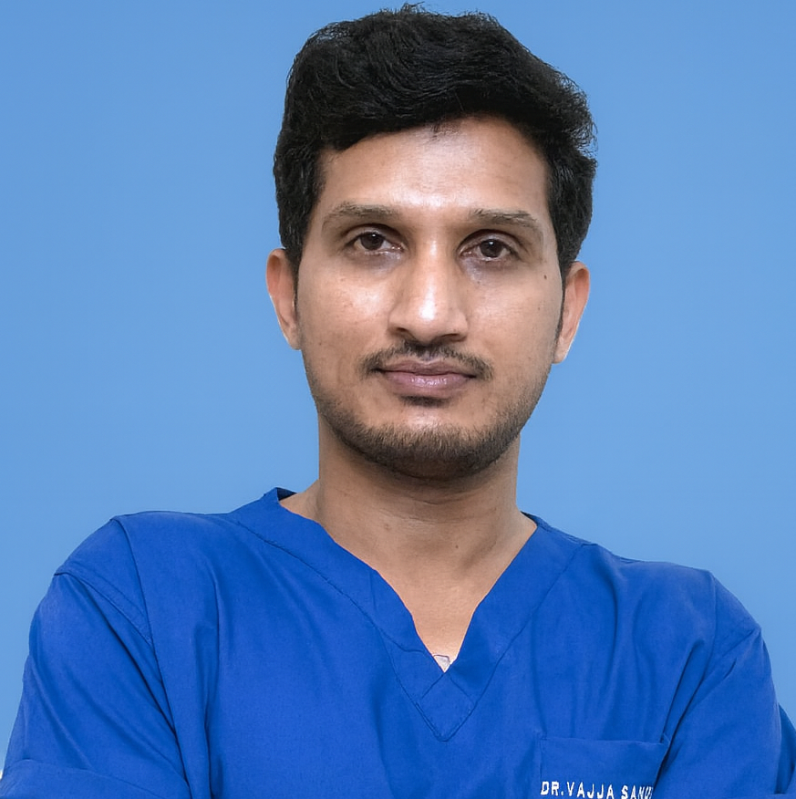

తల-మెడ క్యాన్సర్ · తరచుగా అడిగే ప్రశ్నలుHead & neck cancer · frequently asked questions
తల-మెడ క్యాన్సర్: రోగులు తరచుగా అడిగే ప్రశ్నలుHead and neck cancer: questions patients ask me
తల-మెడ క్యాన్సర్ నిర్ధారణ లేదా అనుమానం వచ్చినప్పుడు, రోగులు, వారి కుటుంబాలు అడిగే ప్రశ్నలకు ఇక్కడ నేను సూటిగా సమాధానం ఇస్తాను. అపాయింట్మెంట్ ఎలా బుక్ చేయాలి, ఏం తీసుకురావాలి, మాట లేదా తినడం మీద ఏ ప్రభావం, ఖర్చు గురించి ఇక్కడ చదవండి. నేను డా. సందీప్ వజ్జ, తల-మెడ క్యాన్సర్ సర్జన్, హైదరాబాద్.When you or a family member is facing a head and neck cancer diagnosis, here I answer plainly the questions patients and families actually ask me. How to book, what to bring, what it means for voice and eating, second opinions, and cost. I am Dr. Sandeep Vajja, a head and neck cancer surgeon in Hyderabad.
సూటి సమాధానంDirect answer
తల-మెడ క్యాన్సర్ రోగులు ఎక్కువగా అడిగేవి: అపాయింట్మెంట్ ఎలా బుక్ చేయాలి, ఏ రిపోర్టులు తీసుకురావాలి, సెకండ్ ఒపీనియన్ తీసుకోవచ్చా, మాట లేదా మింగడం దెబ్బతింటుందా, చికిత్స ఎలా నిర్ణయిస్తారు. మీ రిపోర్టులను ముందుగా వాట్సాప్ చేస్తే, విజిట్కు ముందే వాటిని సమీక్షించి సరైన దారి చెప్పగలను.The questions head and neck cancer patients ask most are how to book, which reports to bring, whether a second opinion is possible, whether voice or swallowing will be affected, and how treatment is decided. If you WhatsApp your reports first, I can review them before the visit and point you the right way.
కొత్తగా క్యాన్సర్ అని తెలిసినప్పుడు చాలా ప్రశ్నలు ఒకేసారి వస్తాయి. కింద ఉన్నవి నా క్లినిక్లో రోగులు, వారి అటెండర్లు తరచుగా అడిగే అసలు ప్రశ్నలు. మీ సొంత పరిస్థితికి సరిపోయే సమాధానం ఎప్పుడూ మీ రిపోర్టులు చూసిన తర్వాతే వస్తుంది, కానీ ఇవి మొదటి అడుగు వేయడంలో సహాయపడతాయి. ఏ నిర్దిష్ట క్యాన్సర్ గురించి తెలుసుకోవాలన్నా, నోటి క్యాన్సర్ లేదా క్యాన్సర్ చికిత్స మార్గాలు పేజీలలో వివరంగా ఉంది.When cancer is new, the questions come all at once. The ones below are the real questions patients and their attenders ask in my clinic. The answer that fits your own situation always comes after I see your reports, but these help you take the first step. To read about a specific cancer, the oral cancer and cancer treatment options pages go into detail.
అపాయింట్మెంట్, సెకండ్ ఒపీనియన్Appointments and second opinions
అపాయింట్మెంట్ ఎలా బుక్ చేయాలి, ఏం తీసుకురావాలి?How do I book an appointment, and what should I bring?
సమయం నిర్ణయించుకోవడానికి క్లినిక్కు కాల్ చేయవచ్చు లేదా వాట్సాప్ చేయవచ్చు. మీ వద్ద ఉన్న రిపోర్టులన్నీ తీసుకురండి: బయాప్సీ రిపోర్ట్, CT లేదా MRI స్కాన్లు (డిస్క్తో సహా), రక్త పరీక్షలు, మీరు వాడే మందుల జాబితా. నోటి పుండు లేదా గడ్డ ఫొటోలు మాత్రమే ఉంటే అవి కూడా తీసుకురండి. ఏది ముఖ్యమో తెలియకపోతే, ప్రయాణానికి ముందే వాట్సాప్ చేయండి, ఇంకా ఏం ఉపయోగపడుతుందో మా టీమ్ చెబుతుంది. అపాయింట్మెంట్ బుక్ చేసుకోండి.You can call or WhatsApp the clinic to fix a time. Bring whatever reports you already have: any biopsy report, scans like a CT or MRI on disc, blood reports, and the list of medicines you take. If you only have photos of a mouth ulcer or swelling, bring those too. If you are not sure what is relevant, send it on WhatsApp first and my team will tell you what else is useful before you travel. Book an appointment here.
సెకండ్ ఒపీనియన్ తీసుకోవచ్చా, రిపోర్టులు ఆన్లైన్లో పంపవచ్చా?Can I get a second opinion, or send my reports online?
రెండూ స్వాగతం. తల-మెడ సర్జరీకి ముందు సెకండ్ ఒపీనియన్ తీసుకోవడం సహేతుకం, అది అపనమ్మకానికి సంకేతం కాదు. ప్రయాణం చేయాలని నిర్ణయించుకోక ముందే, మీ బయాప్సీ రిపోర్ట్, స్కాన్లను వాట్సాప్ చేసి ఆన్లైన్ సమీక్ష పొందవచ్చు. నేను ఆ ఆధారాలను స్వతంత్రంగా చూసి, మీకు ఇచ్చిన ప్లాన్తో ఏకీభవిస్తానో లేదా వేరేలా చూస్తానో నిజాయితీగా చెబుతాను. సెకండ్ ఒపీనియన్ ఎలా పనిచేస్తుందో చదవండి.Yes, both are welcome. A second opinion before head and neck surgery is reasonable and not a sign of distrust. You can WhatsApp your biopsy report and scans for an online review before you decide to travel. I look at the evidence independently and tell you honestly whether I agree with the plan you were given or would approach it differently, so you can decide with a clear head. Read how a second opinion works.
ఎంత త్వరగా చూడగలరు?How soon can I be seen?
తగ్గని పుండు, మెడలో గడ్డ, తగ్గని గొంతు బొంగురు, లేదా నిర్ధారణ అయిన క్యాన్సర్ వాయిదా వేయకూడదు. క్లినిక్కు కాల్ లేదా వాట్సాప్ చేయండి, మా టీమ్ వీలైనంత త్వరగా సమయం ఏర్పాటు చేస్తుంది. మీరు జిల్లా నుండి ప్రయాణిస్తుంటే, రిపోర్టులు ముందే పంపండి, విజిట్ వృథా కాకుండా, వచ్చిన వెంటనే వేగంగా ముందుకు వెళ్లగలం.A non-healing ulcer, a lump in the neck, a hoarse voice that does not settle, or a confirmed cancer should not wait. Call or WhatsApp the clinic and my team will arrange a time as early as possible. If you are travelling from a district, send your reports ahead so the visit is not wasted and we can move faster once you arrive.
ఏమి చికిత్స చేస్తాను, ఎలా నిర్ణయిస్తానుWhat I treat, and how I decide
డా. సందీప్ వజ్జ ఏ సమస్యలకు చికిత్స చేస్తారు?Which conditions does Dr. Sandeep Vajja treat?
నేను తల-మెడ ప్రాంతంలోని క్యాన్సర్లకు చికిత్స చేస్తాను: నోరు, నాలుక, గొంతు, స్వరపేటిక (లారింక్స్), థైరాయిడ్ గ్రంథి, లాలాజల గ్రంథులు, మెడలోని లింఫ్ నోడ్ గడ్డలు. తెల్ల-ఎర్ర మచ్చలు, తగ్గని పుండ్ల వంటి క్యాన్సర్-ముందు మార్పులను కూడా చూస్తాను. ఏదైనా సమస్య వేరే నిపుణుడికి బాగా సరిపోతే, నేను చెప్పి సరైన వ్యక్తి దగ్గరకు పంపుతాను. నోటి క్యాన్సర్ గురించి ఇక్కడ చదవండి.I treat cancers of the head and neck region: the mouth and tongue, the throat, the voice box (larynx), the thyroid gland, the salivary glands, and lumps in the lymph nodes of the neck. I also see pre-cancer changes like white or red patches and non-healing ulcers. If a problem belongs better with another specialist, I will tell you and point you to the right person. Read about oral cancer here.
నా మాట లేదా తినగలగడం పోతుందా?Will I lose my voice or my ability to eat?
ఎల్లప్పుడూ కాదు, ఇది భయపడటం సహజమైన ప్రశ్న. మాట లేదా మింగడం ప్రభావితం అవుతుందా అనేది క్యాన్సర్ ఎక్కడ ఉంది, ఎంత కణజాలం తీయాలి అనే దానిపై ఆధారపడుతుంది. క్యాన్సర్ను పూర్తిగా తీస్తూనే, మాట, మింగడాన్ని ఒంకాలజీపరంగా వీలైనంత కాపాడటం నా లక్ష్యం, కొన్ని కేసుల్లో స్వరం కాపాడే సర్జరీ సాధ్యం. కణజాలం తీయాల్సి వస్తే, రీకన్స్ట్రక్షన్, మాట-మింగడం థెరపీ కోలుకోవడంలో సహాయపడతాయి. మీ కేసుకు ఏమి ఆశించవచ్చో ఆపరేషన్ ముందే వివరిస్తాను.Not always, and it is a fair fear to have. Whether speech or swallowing is affected depends on where the cancer is and how much tissue must be removed. My aim is to remove the cancer fully while protecting voice and swallowing as far as is oncologically possible, and voice-preserving surgery is possible in some cases. Where tissue must be removed, reconstruction and speech and swallowing therapy help recovery. I explain what to expect for your case before any operation.
నాకు నోటి పుండు ఉంది. అంటే నాకు క్యాన్సర్ ఉందా?I have a mouth ulcer. Does that mean I have cancer?
చాలా నోటి పుళ్ళు క్యాన్సర్ కాదు, రెండు వారాల్లో తగ్గుతాయి. మూడు వారాలకు మించి తగ్గని పుండు, లేదా తెల్ల-ఎర్ర మచ్చ పరీక్షించుకోవాలి, ముఖ్యంగా మీరు పొగాకు, గుట్కా, ఖైనీ లేదా వక్క వాడితే. కేవలం పరీక్షతో తుది సమాధానం రాదు. ఇది క్యాన్సరా కాదా అని నిర్ధారించేది బయాప్సీ, అంటే చిన్న కణజాలాన్ని మైక్రోస్కోప్లో చూడటం. ముందుగా పరీక్షించుకోవడమే సురక్షితమైన దారి.Most mouth ulcers are not cancer and settle within two weeks. An ulcer that does not heal in three weeks, or a white or red patch, should be examined, especially if you use tobacco, gutka, khaini, or areca nut. The examination alone cannot give a final answer. A biopsy, where a small piece is looked at under a microscope, is what confirms whether it is cancer. Getting it checked early is the safe path.
చికిత్స ఎలా నిర్ణయిస్తారు?How is the treatment decided?
బయాప్సీ నిర్ధారణ ఇచ్చాక, స్కాన్లు ఎంత వ్యాపించిందో చూపాక, మీ కేసును ట్యూమర్ బోర్డ్లో చర్చిస్తారు, అక్కడ సర్జన్లు, రేడియేషన్, మెడికల్ ఆంకాలజిస్టులు కలిసి ప్లాన్ చేస్తారు. తల-మెడ క్యాన్సర్లో సర్జరీ తరచుగా ప్రధాన చికిత్స, కానీ ఎప్పుడూ కాదు. కొన్నిసార్లు రేడియేషన్ మంచి మొదటి చికిత్స, కొన్నిసార్లు పాథాలజీ రిపోర్ట్ ఆధారంగా సర్జరీ తర్వాత రేడియేషన్ లేదా కీమో-రేడియేషన్ సూచిస్తారు. ప్లాన్ మీ స్టేజ్, ఆరోగ్యాన్ని బట్టి ఉంటుంది, ఒక స్థిర నియమం కాదు. చికిత్స మార్గాలను ఇక్కడ చూడండి.After the biopsy confirms the diagnosis and scans show how far it has spread, your case is discussed in a tumour board where surgeons, radiation, and medical oncologists plan together. Surgery is often the main treatment in head and neck cancer, but not always. Sometimes radiation is the better first treatment, and sometimes radiation or chemoradiation is advised after surgery based on the pathology report. The plan is built around your stage and general health, not a fixed rule. See the treatment options here.
ఖర్చు, పథకాలు, ఆచరణాత్మక విషయాలుCost, schemes, and practical things
ఆరోగ్యశ్రీ లేదా బీమా తీసుకుంటారా?Do you accept Aarogyasri or insurance?
ఆరోగ్యశ్రీ, ఆరోగ్య బీమా వంటి సహాయ మార్గాలు ఉన్నాయి, అర్హత మీ పథకం, మీ నిర్ధారణ, ఆసుపత్రిని బట్టి మారుతుంది. నేను ఆన్లైన్లో సంఖ్యలు చెప్పను, ఎందుకంటే నిజమైన అంచనా మీ కేసుకు మాత్రమే లెక్కిస్తాం. మీ రిపోర్టులను మా టీమ్కు వాట్సాప్ చేయండి, మీరు ఏ సహాయానికి అర్హులో, మీ పరిస్థితికి అంచనా ఎలా ఉంటుందో అర్థం చేసుకోవడంలో సహాయం చేస్తాం. ఖర్చు, ఆరోగ్యశ్రీ గురించి ఇక్కడ చదవండి.Support routes like Aarogyasri and health insurance do exist, and eligibility depends on your scheme, your diagnosis, and the hospital. I do not quote figures online because the honest number is worked out for your case. Send your reports to my team on WhatsApp and we will help you understand which support you may qualify for and what an estimate looks like for your situation. Read about cost and Aarogyasri here.
క్లినిక్లో ఏ భాషల్లో మాట్లాడవచ్చు?What languages can I speak in the clinic?
మీకు అనుకూలమైన భాషలో, తెలుగు, హిందీ లేదా ఇంగ్లీష్లో మాట్లాడవచ్చు. నేను చూసే చాలా కుటుంబాలు తెలుగులో వివరించడంలో సౌకర్యంగా ఉంటాయి, అది పూర్తిగా సరైనది. మీరు మీ నిర్ధారణను, ప్లాన్ను అర్థం చేసుకోవడమే ముఖ్యం, అందుకే వైద్య పదాల కంటే సరళమైన మాటల్లో వివరించడానికి సమయం తీసుకుంటాను.You can speak in Telugu, Hindi, or English, whatever you are comfortable with. Many families I see are more comfortable explaining in Telugu, and that is completely fine. The most important thing is that you understand your diagnosis and the plan, so I take the time to explain in plain words rather than medical terms.
కన్సల్టేషన్కు నా కుటుంబం రావచ్చా?Can my family come with me to the consultation?
అవును, దాన్ని నేను ప్రోత్సహిస్తాను. వెతికే, కాల్స్ చేసే, ఇంట్లో రోగిని చూసుకునే వ్యక్తి ప్లాన్ను నేరుగా వినాలి. కుటుంబం కలిసి అర్థం చేసుకుంటే క్యాన్సర్ నిర్ణయాలు సులభం అవుతాయి. ప్రధాన అటెండర్గా ఉండే కుటుంబ సభ్యుడిని తీసుకురండి, ఖర్చు, సెకండ్ ఒపీనియన్తో సహా మీకున్న ఏ ప్రశ్ననైనా అడగండి.Yes, and I encourage it. The person who does the searching, makes the calls, and cares for the patient at home should hear the plan directly. Cancer decisions are easier when the family understands them together. Bring the family member who will be the main attender, and ask any question you have, including about cost and second opinions.
వెంటనే చర్య అవసరమైనవి: నోటి లేదా గొంతు నుండి ఎక్కువగా రక్తం పడటం, శ్వాస తీసుకోవడంలో తీవ్ర ఇబ్బంది, లేదా మింగడం పూర్తిగా ఆగిపోవడం, ఇవి ఏవైనా ఉంటే తదుపరి అపాయింట్మెంట్ కోసం వేచి ఉండకండి. వెంటనే దగ్గరి ఆసుపత్రికి వెళ్లండి.What needs action now: if there is heavy bleeding from the mouth or throat, severe difficulty breathing, or swallowing that has stopped completely, do not wait for the next appointment. Go to the nearest hospital now.
సరైన వైద్యుడిని ఎలా ఎంచుకోవాలిChoosing the right doctor
తల-మెడ క్యాన్సర్లో చికిత్సకు ముందు పుండు లేదా గడ్డను పరీక్షించి బయాప్సీ చేసే, స్టేజ్ను సరిగ్గా నిర్ధారించే, మాట-మింగడం గురించి ముందే వివరించే, మీ కేసును ట్యూమర్ బోర్డ్లో చర్చించే, సెకండ్ ఒపీనియన్ను స్వాగతించే వ్యక్తిని చూడండి. కొన్నిసార్లు వేరే నిపుణుడు ఎక్కువ పాత్ర పోషించాలి: రేడియేషన్ ప్రధాన చికిత్స అయితే రేడియేషన్ ఆంకాలజిస్ట్, కీమో అవసరమైతే మెడికల్ ఆంకాలజిస్ట్. తల-మెడ క్యాన్సర్లో రేడియేషన్, కీమో-రేడియేషన్ గురించి CION నెట్వర్క్లోని డా. టి. రాఘవేందర్, రేడియేషన్, మెడికల్ ఆంకాలజిస్ట్ నుండి కూడా అభిప్రాయం తీసుకోవచ్చు. చికిత్స మొదలుపెట్టే ముందు సెకండ్ ఒపీనియన్ తీసుకోవడం సహేతుకం. డా. సందీప్ వజ్జ MBBS, MS సర్జికల్ ఆంకాలజీ, DrNB సర్జికల్ ఆంకాలజీ కలిగిన తల-మెడ క్యాన్సర్ సర్జన్.In head and neck cancer, look for someone who examines the ulcer or lump and takes a biopsy before treating, stages it properly, explains speech and swallowing in advance, discusses your case in a tumour board, and welcomes a second opinion. Sometimes another specialist should take a bigger role: a radiation oncologist if radiation is the main treatment, a medical oncologist if chemotherapy is needed. For radiation and chemoradiation in head and neck cancer, you can also seek the view of Dr. T. Raghavender, a radiation and medical oncologist in the CION network. A second opinion before starting treatment is reasonable. Dr. Sandeep Vajja is a head and neck cancer surgeon holding an MBBS, MS Surgical Oncology, and DrNB Surgical Oncology.
ఖర్చు అంచనా ఎలా పొందాలిHow to get a cost estimate
నిజాయితీ గల అంచనా మీ కేసుకు మాత్రమేThe only honest estimate is for your case
తల-మెడ క్యాన్సర్ చికిత్స ఖర్చుకు ఒక్క సంఖ్య లేదు. అది స్టేజ్, ఏ చికిత్స అవసరం, సర్జరీతో పాటు రేడియేషన్ లేదా కీమో అవసరమా అనే వాటిపై ఆధారపడుతుంది. ఆన్లైన్లో స్థిర ధర పెట్టను, అది తప్పుదారి పట్టిస్తుంది. మీ బయాప్సీ, స్కాన్ రిపోర్టులు నా టీమ్కు వాట్సాప్ చేయండి, మీ కేసుకు సరిపోయే అంచనా ఇస్తాం, ఏ సహాయ పథకాలకు అర్హులో కూడా చెబుతాం.There is no single figure for head and neck cancer treatment cost. It depends on the stage, which treatment is needed, and whether radiation or chemotherapy is added to surgery. I do not put a fixed price online because it would mislead you. Send your biopsy and scan reports to my team on WhatsApp and we will work out an estimate for your case, and tell you which support schemes you may qualify for.
మీ డాక్టర్ను అడగాల్సిన ప్రశ్నలుQuestions to ask your doctor
నాది ఏ రకం తల-మెడ క్యాన్సర్, ఏ స్టేజ్లో ఉంది?What type of head and neck cancer do I have, and what stage is it?
నా చికిత్సలో సర్జరీ, రేడియేషన్, కీమోలో ఏది ముందు వస్తుంది?In my treatment, does surgery, radiation, or chemo come first?
చికిత్స నా మాట, మింగడంపై ఎలా ప్రభావం చూపవచ్చు?How might treatment affect my speech and swallowing?
నా కేసును ట్యూమర్ బోర్డ్లో చర్చించారా?Has my case been discussed in a tumour board?
సెకండ్ ఒపీనియన్ తీసుకోవచ్చా, రిపోర్టులు ఎలా పంపాలి?Can I take a second opinion, and how do I send my reports?

Dr. Sandeep Vajja
MBBS · MS సర్జికల్ ఆంకాలజీ · DrNB సర్జికల్ ఆంకాలజీ · తల-మెడ క్యాన్సర్ శస్త్రచికిత్సMBBS · MS Surgical Oncology · DrNB Surgical Oncology · head & neck cancer surgery
వైద్య సమీక్ష మరియు ఆమోదం: డా. సందీప్ వజ్జ, MBBS · MS సర్జికల్ ఆంకాలజీ · DrNB సర్జికల్ ఆంకాలజీ. చివరిసారి సమీక్షించబడింది: 22 జూన్ 2026.Medically reviewed and approved by Dr. Sandeep Vajja, MBBS · MS Surgical Oncology · DrNB Surgical Oncology. Last reviewed: 22 June 2026.
ఈ పేజీ చదవడం లేదా వాట్సాప్లో సందేశం పంపడం వైద్యుడు-రోగి సంబంధాన్ని సృష్టించదు. చికిత్స పరీక్ష, మీ రిపోర్టులు మరియు ట్యూమర్ బోర్డ్ సమీక్షపై ఆధారపడుతుంది. చూపిన ఏ ఖర్చు అయినా అంచనా మాత్రమే, పథకాల అర్హత మారవచ్చు. అత్యవసర పరిస్థితిలో వైద్యుడిని లేదా దగ్గరి ఆసుపత్రిని సంప్రదించండి. ఈ పేజీ ఆధారంగా ఏ మందునూ మొదలుపెట్టవద్దు లేదా ఆపవద్దు.Reading this page or messaging on WhatsApp does not create a doctor-patient relationship. Treatment depends on examination, your reports, and tumour-board review. Any cost shown is an estimate and scheme eligibility varies. In an emergency, contact a doctor or the nearest hospital. Do not start or stop any medicine based on this page.